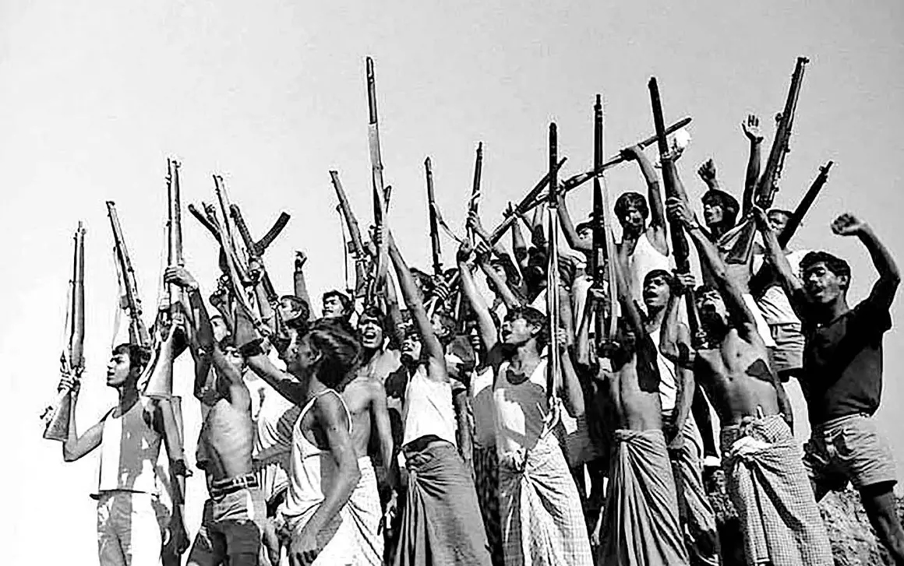

The Beginning
India establishes the Research and Analysis Wing (R&AW) as a dedicated external-intelligence organisation.
🟢 DOCUMENTED
INDIA • EXTERNAL INTELLIGENCE • 1968—PRESENT
How does a country prepare for a threat it cannot see?
BEGIN THE INVESTIGATION →BEFORE THE RESPONSE
It needs information.
What is happening beyond its borders? What are other governments planning? Which developments could threaten India's security, diplomacy or strategic interests?
Answering questions like these is part of the world of external intelligence.
R&AW — the Research and Analysis Wing — is India's external-intelligence organisation.
WHY INDIA NEEDED A NEW INTELLIGENCE ARCHITECTURE
R&AW did not appear in isolation. Its creation came after years of changing security challenges and growing recognition that India needed a dedicated organisation focused on intelligence beyond its borders.
India becomes independent and inherits the Intelligence Bureau as its principal intelligence organisation.
The war with China exposes serious weaknesses in India's intelligence and strategic-warning system.
The war with Pakistan adds further pressure for improvements in India's external-intelligence capability.
India establishes the Research and Analysis Wing as a dedicated external-intelligence organisation.
FOUNDING CHIEF
Rameshwar Nath Kao became the founding chief of R&AW when the organisation was established in 1968.
His significance goes beyond individual operations: Kao helped build the structure and professional culture of India's new external-intelligence organisation.
The 1962 and 1965 conflicts exposed intelligence and strategic shortcomings, but the creation of R&AW was part of a broader restructuring of India's external intelligence system.
1968 → PRESENT
R&AW's history stretches across wars, diplomacy, regional conflicts, technological change and major transformations in India's security system.
India establishes the Research and Analysis Wing (R&AW) as a dedicated external-intelligence organisation.
During the crisis in East Pakistan, India's intelligence apparatus supported the wider Indian effort involving Bengali resistance forces. The events culminated in the creation of Bangladesh.
The hijacking of an Indian Airlines aircraft became an important episode in India-Pakistan relations and had significant aviation and strategic consequences.
Political change in Sikkim culminates in its integration with India. Intelligence, diplomacy, local politics and regional security all intersect in this complex episode.
Pakistan's developing nuclear programme becomes an important intelligence concern for India. Later accounts describe intelligence collection around the programme, including the famous hair-sample story.
India's involvement in Sri Lanka becomes increasingly complex as ethnic conflict, Tamil militant groups and Indian regional-security interests collide.
The Kargil conflict exposes serious problems in intelligence assessment, surveillance and inter-agency coordination, leading to a major national review.
Following major security challenges, India's intelligence architecture expands its technical, defence and coordination capabilities.
Modern intelligence operates in an environment shaped by terrorism, geopolitics, technology, cyber threats, satellite capabilities and rapidly changing regional security challenges.
Some events are supported by official records. Others rely on memoirs, journalism or accounts from former officials. Some claims remain disputed, while operational details may never become public.
HISTORY • INTELLIGENCE • EVIDENCE
Six episodes that help explain the evolution of India's external-intelligence capability — and the limits of what the public record can prove.

The Bangladesh Liberation War became one of the defining episodes of R&AW's early history. Intelligence collection, contacts with Bengali resistance networks and support to the wider Indian effort formed part of a much larger political, humanitarian and military crisis.
Indian Airlines' Ganga was hijacked to Lahore on 30 January 1971. Later accounts by former R&AW officer R. K. Yadav describe the episode as a covert intelligence operation, but important parts of that account remain contested.

Pakistan's nuclear programme became a major strategic intelligence concern for India. Later intelligence accounts describe attempts to gather information about the programme, including the famous hair-sample story.
Political transformation in Sikkim culminated in its integration with India in 1975. Former R&AW officer G. B. S. Sidhu later provided a first-hand account of the intelligence and political environment surrounding these events.
India's involvement in Sri Lanka became increasingly complicated as ethnic conflict, Tamil militant organisations and Indian regional-security interests collided. The episode remains one of the most complex chapters in India's intelligence history.
Kargil exposed serious weaknesses in intelligence collection, assessment and inter-agency coordination. The subsequent Kargil Review Committee examined these failures in detail and became a major foundation for later intelligence reforms.
A government record, a former officer's memoir, a journalist's investigation and an internet claim are not equivalent sources. Every case on this website will identify what is documented, what is reported and what remains disputed or unknown.
BEHIND THE ORGANISATION
Founder / First Chief
Former R&AW Chief
Former R&AW Officer
Former R&AW Officer
IT IS MORE THAN "COLLECTING SECRETS"
Gather information.
Understand what it means.
Judge uncertainty and significance.
Turn intelligence into action.
CLAIMS • ALLEGATIONS • CONSPIRACY THEORIES
This section separates allegations and theories from established historical evidence.
Allegations concerning Indian intelligence and Baloch separatist movements.
Public allegations concerning suspected intelligence-linked activity abroad.
EXPLORE FURTHER
R&AW is India's external-intelligence organisation. Its publicly described role concerns intelligence relating to developments outside India that may affect national security and foreign policy.
R&AW is focused on external intelligence, while the Intelligence Bureau is India's principal domestic intelligence organisation.
No. Public information about intelligence agencies contains documented history, memoirs, journalism, disputed accounts and speculation. They should not all be treated as equally reliable.
Intelligence organisations necessarily operate with classified information, meaning the public record cannot provide a complete picture of their activities.
THE EVIDENCE BEHIND THE STORY
Important claims will be connected to their underlying documents, academic research, official material and credible reporting.
Official records, parliamentary material, government releases and archival documents.
Academic books, papers and research from established institutions.
Memoirs and interviews, clearly identified as first-hand accounts.
Reputable journalism, photographs, scanned pages and archival material.
HOW THIS PROJECT TREATS EVIDENCE
This project distinguishes documented facts from credible historical accounts, disputed allegations, unverified claims and information that remains unknown or classified.
Where the public record is incomplete, we say so. We do not present speculation as established fact.
R&AW • 1968 — PRESENT
Some are disputed.
And some may remain classified.
That's a story for another day.
↑ BACK TO THE BEGINNING